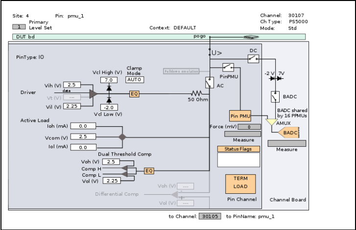
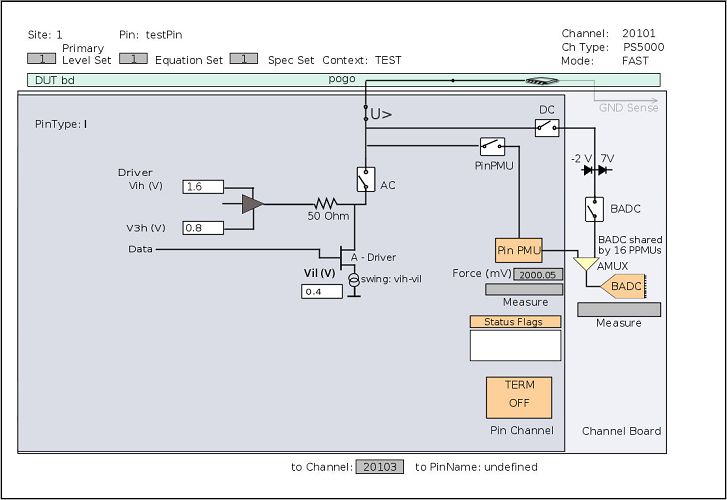

Pin Scale 5000 hardware overview
Channel modules
There are eight 32-channel modules. Each channel module consists of the following components:
- one test processor core per single channel
- a dual-channel front-end module per channel pair, with following components
- a 4-level driver (in FAST mode only): vih and vil,
v3h and
v3l = v3h - (vih - vil)Note FAST mode is a pre-release version on SmarTest 7.10.3 and has been enabled only for evaluation purposes. - a dual-threshold comparator
- a differential comparator
- an active load
- a pin PMU (PPMU)
The pin PMU (PPMU) allows you to do fully parallel value measurements per pin.
- shared vector memory for all dual-channels
- a 4-level driver (in FAST mode only): vih and vil,
v3h and
- memory modules providing 448 MiByte of dedicated memory per channel
- one board ADC (BADC) per 16 channels of the channel module
The BADC increases the DC accuracy. The BADC is also supported for static and dynamic high-impedance voltage measurements.
- high voltage protection devices
Logical boards
Each physical channel module has two logical boards, with 16 channels each.
Hardware view
In the Hardware view (see Hardware Perspective), a single channel of the PS5000 card is displayed as shown below for the standard mode and the FAST mode, respectively:


Pin PMU
Be aware that crosstalk might occur in neighboring channels of the Pin Scale 5000 card if its PPMU is used to perform the following actions:
- measure a DC value using successive approximation.
Relays
The Pin Scale 5000 card has no AC relays and no PPMU switches. These functions are integrated as virtual relay and sense switches, or multiplexers in the front-end module.
Equipment damage.
Even in a disconnected state, current can flow through a channel via the pull-down function. In case current flows into the disconnected pin, the differential pair pin will be affected.
Do not connect a Pin Scale 5000 pogo pin directly to an active resource like XPS256, DPS128, or AVI64. We strongly recommend connecting a Pin Scale 5000 channel via a relay to an active resource.
To connect the front-end modules to the channel module's DC line, each channel module has got physical DC relays.
Functional changes
- Introduced in SmarTest 7.10.2